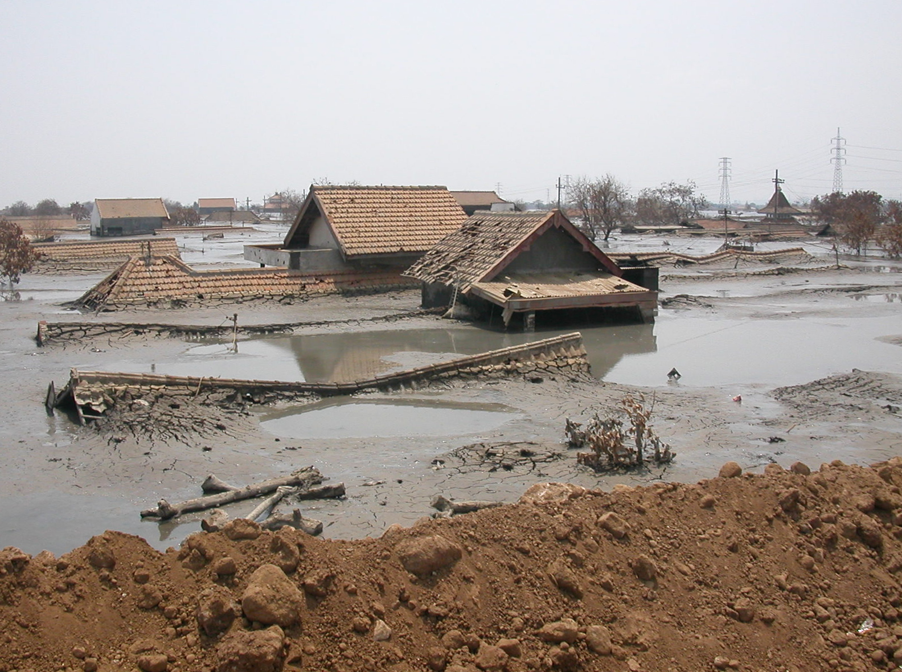

Sidoarjo dahulu dikenal sebagai pusat pemerintahan Kerajaan Janggala. Pada masa kolonialisme Hindia Belanda, Sidoarjo merupakan bagian dari Kota Surabaya. Nama daerahnya pada masa itu ialah Sidokare. Daerah Sidokare dipimpin oleh seorang patih bernama R. Ng.

Sidoarjo dahulu dikenal sebagai pusat pemerintahan Kerajaan Janggala.[butuh rujukan] Pada masa kolonialisme Hindia Belanda, Sidoarjo merupakan bagian dari Kota Surabaya.[5] Nama daerahnya pada masa itu ialah Sidokare. Daerah Sidokare dipimpin oleh seorang patih bernama R. Ng. Djojohardjo, bertempat tinggal di kampung Pucang Anom yang dibantu oleh seorang wedana yaitu Bagus Ranuwiryo yang berdiam di kampung Pangabahan. Pada 1859, berdasarkan Keputusan Pemerintah Hindia Belanda No. 9/1859 tanggal 31 Januari 1859 Staatsblad No. 6, daerah Kabupaten Surabaya dibagi menjadi dua bagian yaitu Kabupaten Surabaya dan Kabupaten Sidokare. Sidokare dipimpin R. Notopuro (kemudian bergelar R.T.P. Tjokronegoro) yang berasal dari Kasepuhan. Ia adalah putra dari R.A.P. Tjokronegoro, Bupati Surabaya. Pada tanggal 28 Mei 1859, nama Kabupaten Sidokare yang memiliki konotasi kurang bagus diubah namanya menjadi Kabupaten Sidoarjo.[butuh rujukan] Setelah R. Notopuro wafat tahun 1862, maka kakak almarhum pada tahun 1863 diangkat sebagai bupati, yaitu Bupati R.T.A.A. Tjokronegoro II yang merupakan pindahan dari Lamongan. Pada tahun 1883 Bupati Tjokronegoro pensiun, sebagai gantinya diangkat R.P. Sumodiredjo pindahan dari Tulungagung tetapi hanya 3 bulan saja menjabat sebagai Bupati karena wafat pada tahun itu juga, dan R.A.A.T. Tjondronegoro I diangkat sebagai gantinya. Pada masa Pedudukan Jepang (8 Maret 1942–15 Agustus 1945), daerah delta Sungai Brantas termasuk Sidoarjo juga berada di bawah kekuasaan Pemerintahan Militer Jepang (yaitu oleh Kaigun, tentara Laut Jepang). Pada tanggal 15 Agustus 1945, Jepang menyerah pada Sekutu. Permulaan bulan Maret 1946, Belanda mulai aktif dalam usaha-usahanya untuk menduduki kembali daerah ini. Ketika Belanda menduduki Gedangan, pemerintah Indonesia memindahkan pusat pemerintahan Sidoarjo ke Porong. Daerah Dungus (Kecamatan Sukodono) menjadi daerah rebutan dengan Belanda. Tanggal 24 Desember 1946, Belanda mulai menyerang kota Sidoarjo dengan serangan dari jurusan Tulangan. Sidoarjo jatuh ke tangan Belanda hari itu juga. Pusat pemerintahan Sidoarjo lalu dipindahkan lagi ke daerah Jombang. Pemerintahan pendudukan Belanda (dikenal dengan nama Recomba) berusaha membentuk kembali pemerintahan seperti pada masa kolonial dulu. Pada November 1948, dibentuklah Negara Jawa Timur salah satu negara bagian dalam Republik Indonesia Serikat. Sidoarjo berada di bawah pemerintahan Recomba hingga tahun 1949. Pada 27 Desember 1949, sebagai hasil kesepakatan Konferensi Meja Bundar, Belanda menyerahkan kembali Negara Jawa Timur kepada Republik Indonesia Serikat, sehingga daerah delta Brantas dengan sendirinya menjadi daerah Republik Indonesia.

Lumpur Lapindo merupakan bencana yang terjadi di Kecamatan Porong, Kabupaten Sidoarjo. Pada 18 Mei 2006, PT Lapindo Brantas melakukan pengeboran mencapai 8.500 kaki. Sebelum pengeboran dilakukan, pihak perusahaan sempat diingatkan terkait pemasangan pipa selubung. Itu harus dilakukan sebelum pengeboran. Namun semburan lumpur panas mulai terjadi pada 29 Mei 2006 pukul 05.30 WIB. Titik semburan berjarak 150 meter dari permukiman. Warga pun mencium bau gas yang menyengat dari semburan tersebut. Baca artikel detikjatim, "Sejarah Kelam Lumpur Lapindo Sidoarjo yang Menyembur 17 Tahun Silam"
